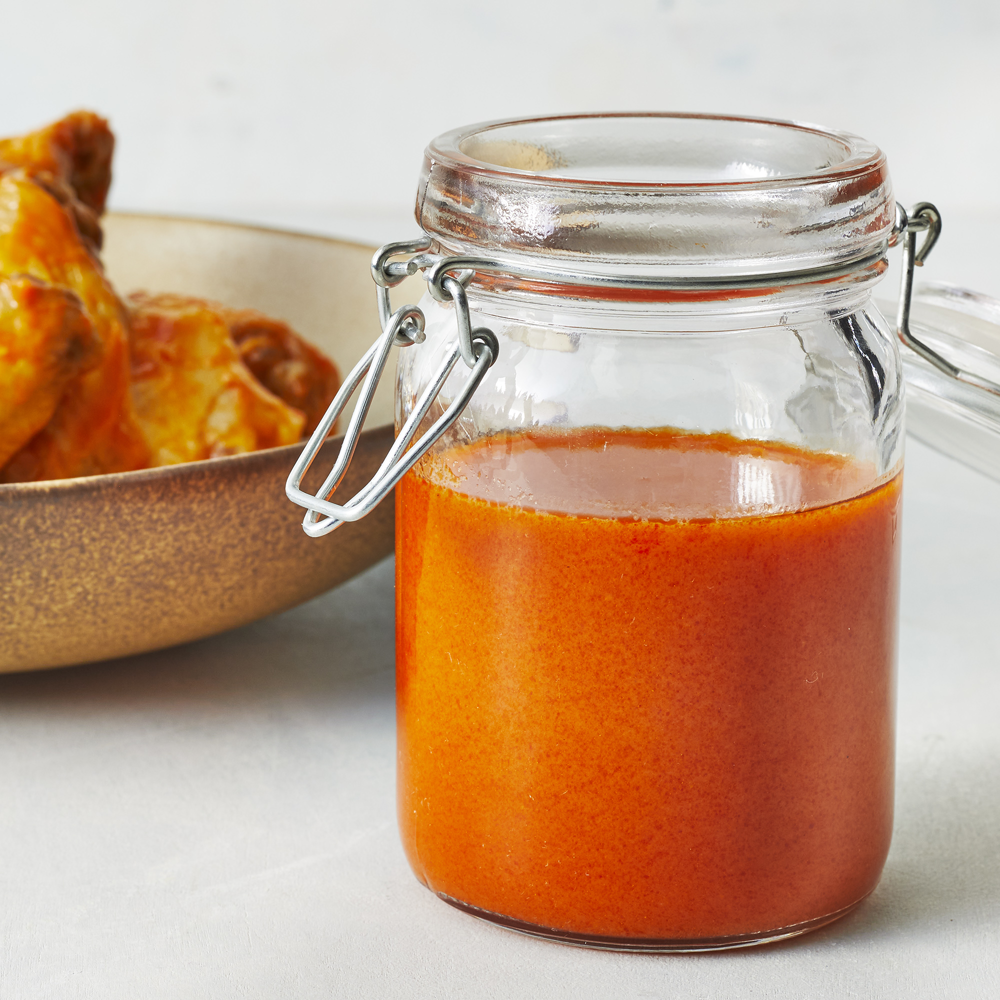

Truffalo Wing Sauce

A jar of freshly homemade Buffalo sauce.
In my experience, buffalo sauce is always best when fresh made at home. The flavors are more robust and the satisfaction of crafting a sauce yourself is worth it in-and-of itself. The following recipe is a modification of a buffalo sauce that I found on allrecipes that I have used a few times. I enjoyed the sauce and it was super simple to make, but I wanted to replace some of the butter with healthier alternatives as well as put some of my own personal tweaks into it. I present to you Truffalo Wing Sauce.
Ingredients:
8 serving
- 2/3 cup Louisiana style hot pepper sauce
- 1/2 cup cold plant butter(avocado,olive), or coconut oil
- 2 tbs truffle oil
- 1 tbs white vinegar
- 1/4 tsp Worcestershire sauce
- 1/4 tsp cayenne pepper
- 1/4 tsp smoked paprika
- 2 large roasted garlic cloves, minced
- 1/8 tsp liquid smoke
- pinch of salt
Directions:
- Add together all ingredients excluding the truffle oil into a pot over medium heat. Bring sauce to a simmer while stirring frequently. When the sauce begins to bubble (even a little) remove from heat and add in truffle oil. Whisk together and set aside to cool until use.
Home
.